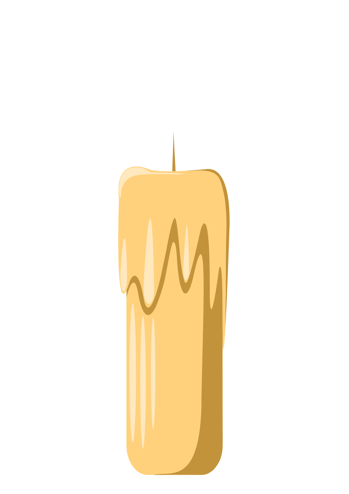

If you are still deciding whether to reach out, or if counselling isn't currently affordable, the organisations below offer free support, information, and helplines for a range of mental health challenges. Or if you'd like to try some simple mindfulness exercises, you can use the tools below.
Sometimes, when we’re feeling overwhelmed, taking a moment to pause and ground ourselves can be really helpful. Below is a simple breathing tool you can use whenever you need a break from your thoughts.
Breathe In...
Or if you'd rather sit with your thoughts for a moment, simply click "Light Candle" and focus on any thoughts that come to mind. Stay here as long as you like until you're ready to click "Blow Out" and carry on with your day.

Below is a selection of trusted organisations that provide free support, information and helplines for a range of mental health challenges.

Helpline: 116 123
A free 24-hour helpline for anyone struggling, in crisis, or simply needing someone to listen.
Visit Website
Infoline: 0300 123 3393
Mind provides trusted mental health information, coping strategies, and guidance on finding support locally.
Visit Website
CBT-based worksheets and resources that help with anxiety, depression, anger, and other challenges.
Visit Website
Helpline: 0300 123 0789
Support and information for people living with chronic pain, including self-help tools and community forums.
Visit Website
A global initiative helping people with invisible disabilities receive understanding and support.
Visit Website
Helpline: 0808 808 1677
Bereavement counselling, grief support groups, and practical advice for coping with loss.
Visit Website